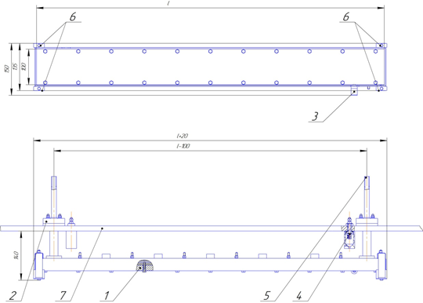

The arc planar evaporator is designed for applying metal, ceramic and composite coatings (thin films) in a vacuum by arc spraying in vacuum installations.
Arc evaporator is widely used for applying the following coatings:
- metal: Ti, Cr, Zr, stainless steel.
- ceramic: TiN, AlTiN, TixOy, AlTiSiN, TiCN, CrxNy, and many others, used as strengthening, protective and decorative, photocatalytic coatings. (tools, stamps, molds, furniture and door fittings, decorative ceramics)
- application of solders (POS40) functional layers.
In Fig. 1 shows a diagram of one of the options for an extended arc planar evaporator

Fig. 1 Schematic of a planar arc evaporator. 1-Target (cathode), 2-vacuum input, 3-ignition, 4- electrical input, 5 - water inputand high current input, 6-terminal sensors
The vacuum-arc evaporation process begins at a pressure in the vacuum chamber of 9x10-1– 4x 10-2 Pa (7x10-3 – 3 ´ 10-
The local temperature of the cathode spot is extremely high (approx.
Since the arc is essentially a conductor carrying current, it can be influenced by applying an electromagnetic field, which is used in practice to control the movement of the arc along the surface of the cathode, to ensure its uniform erosion.
In a vacuum arc, an extremely high power density is concentrated in the cathode spots, resulting in a high level of ionization (30-100%) of the resulting plasma flows, consisting of multiply charged ions, neutral particles, clusters (macroparticles, droplets). If a chemically active gas is introduced into a vacuum chamber during the evaporation process, when interacting with the plasma flow, its dissociation, ionization and excitation can occur, followed by plasma-chemical reactions with the formation of new chemical compounds and their deposition in the form of a film (coating).
Characteristics of planar arc evaporators
| № | Parameter name | Meaning |
| 1 | Working pressure, Pa | from 0.01 to 1.1 |
| 2 | Operating current, A | from 70 to 250 |
| 3 | Operating voltage, V | from 20 to 40 |
| 4 | Deposition rate onto a fixed substrate for copper, µm/min, not less | 0,5 |
| 5 | Dimensions of target lengths, manufactured arc evaporators, mm | from 400 to 3000 |
The arc evaporator is structurally designed with cooling and power supply outlets on the rear side Fig. 1 are connected to cooling and power supply using insulated tubes with sealing units of the manufacturer’s own design.
Our planar evaporators have a design that has been tested by time and thousands of technological processes and are used not only in Russia, but also in Spain, Kuwait, Hungary and other countries.
Interaction with Clients begins with the selection of a technological source, selection of additional options, consultation on standard process modes and continues with service maintenance of the sources.
Advantages of our planar arc evaporators:
- We provide a model of an arc evaporator for designers, and give the optimal distance to the substrate.
- high spray speed;
- high degree of ionization of the sprayed material;
- high coating adhesion;
- reduced droplet phase due to the movement of the cathode spot;
- low cost of coating;
- good repeatability of coatings (no spectral plasma monitoring device required)
- high target utilization rate;
- fast production times;
- multi-stage quality control;
- stable characteristics over time;
- direct and indirect cooling of the target (cathode);
- round flat arc evaporator.
- cylindrical high current arc evaporator
- tubular extended arc evaporator
The experience and professionalism of our team allows us not only to produce a standard range of arc evaporators, but also to conduct R&D of sources of various types and purposes. Several projects are currently in development and testing stages: